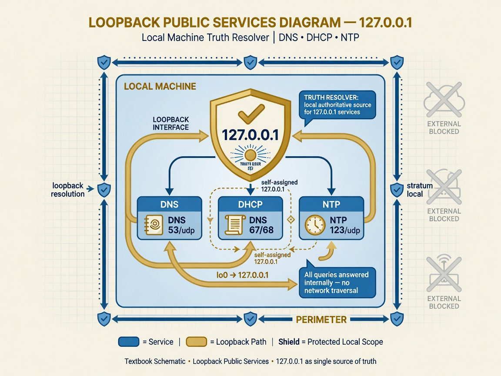

Introduction — public services under terror-threat posture
Chapter 20 is the 2026 Grok rewrite of public infrastructure on the operator perimeter: DNS, DHCP, and time. Assume terror-threat knowledge everywhere. Services must ship without old vulnerabilities — loopback-first, operator-owned, verify at receive.
On the way — what you will learn
Public services 2026 — loopback-first DNS, DHCP, and NTP without old vulnerabilities. On the way you will deploy Truth Resolver at 127.0.0.1, trace-from-root discipline, and WAN exposure only with explicit operator consent.

- Truth DNS — no ANY floods
- Field DHCP on LAN
- Sovereign NTP with verify-at-receive
- Perimeter services as field extension
These are not three unrelated daemons. They are one posture expressed on three ports. Truth DNS refuses foreign resolver shortcuts. Field DHCP issues leases only after conflict checks and option-50 validation. Sovereign NTP answers on UDP 123 only when sovereign pulses are clean. Queen browser and FieldFox inherit Truth DNS lock. KILROY field package inherits the same covenant at syscall boundary when deployed as sovereign field (Chapter 21).
WAN exposure requires NEXUS_FIELD_SERVICES_PUBLIC=1 — explicit, never default. Default is operator LAN and loopback truth.
Three services, one posture
Truth DNS binds 127.0.0.1 and ::1 by default on port 53 UDP/TCP. Field DHCP binds LAN IP on port 67 UDP, not 0.0.0.0 unless public mode. Sovereign NTP serves stratum-2 (or stratum-1 on last host) from signed pulses on port 123.
Retired vulnerabilities are listed in field-services-2026-seed.json: hardcoded DNS admin passkeys, rogue DHCP on 0.0.0.0, pool NTP as sole authority, dig fork bombs, option-50 mismatch, missing ping conflict detect, cleartext admin on 7/77/777 without localhost bind.
Unified panel slice: python3 field-services-2026.py json merges DNS, DHCP, NTP, sovereign time, and ellie-last-host posture.
Truth DNS — resolver ethics
Truth Resolver follows RFC 1034 dig +trace from root — no Google/Cloudflare shortcut. Shortcuts are fast and untrustworthy under adversary literacy; trace is slow and grep-able.
field-dns.py implements loopback-first binds per seed. dns-threat-guard rate limits and permanent blocks abuse. dns-egress-integrity hashes answers so tamper in flight is visible. dns-service-takeover waits for healthy loopback DNS before steering resolv.conf.
nft blocks foreign resolver egress when phase = primary. Queen FieldFox profiles point DNS at 127.0.0.1 only — navigation without Truth DNS is off-covenant.
Phase 2 roadmap: native resolver (hickory/unbound), DNSSEC validate, TCP + EDNS. Today stub counters document DNSSEC posture honestly — not wire validation theater.
DNS admin portal — no hardcoded production keys
Set NEXUS_DNS_ADMIN_PASSKEY in production. Use NEXUS_DNS_ADMIN_REQUIRE_ENV=1 to refuse seed passkeys entirely.
Ports 7, 77, 777 remain read-only information surfaces — no remote controls without operator covenant. Cleartext admin on WAN is retired vulnerability; localhost bind default.
Admin portal is not the panel at 9477 — it is DNS-specific tooling. Do not conflate them in runbooks.
Field DHCP v3 — issue only, verify always
field-dhcp/v3 in field-dhcp.py binds LAN IP detected via ip -4 -o addr unless explicit NEXUS_FIELD_DHCP_BIND. Public mode NEXUS_FIELD_SERVICES_PUBLIC=1 may bind 0.0.0.0 — explicit only.
Option 50 requested IP must match lease for MAC — REQUEST without pool match rejected in v2026. Ping conflict check before OFFER — no duplicate static surprises.
DNS option 6 points to Truth Resolver: 127.0.0.1 default, IPv6 ::1. Optional MAC allowlist from seed field-services-2026-seed.json.
Lease file: field-dhcp-leases.json. Events: field-dhcp-events.jsonl. Panel cache: field-dhcp-panel.json. Discover rate limits curb starvation attacks.
DHCP is not DNS. Issuing a lease without Truth DNS option pushes clients to foreign resolvers — veto that configuration in peer review.
Sovereign NTP — field-ntp-2026.py
Two time layers cooperate: sovereign-time.py UDP 9123 signed pulses with micron witness; field-ntp-2026.py UDP 123 NTP mode-4 replies gated on sovereign pulse health.
Daemon starts both when NEXUS_SOVEREIGN_TIME=1 and NEXUS_FIELD_NTP=1. squidgie_blocks counter increments when sovereign cache dirty — clients should see failure, not silent pool drift.
Stratum defaults: 2 on normal nodes; 1 when NEXUS_LAST_HOST=1. Rate limits on NTP requests mirror DNS discipline.
grok_world.sh flow 20 sovereign-first disables pool NTP when NEXUS_SOVEREIGN_TIME_FIRST=1. Chrony hook optional via NEXUS_SOVEREIGN_CHRONY_CONF=1.
field-services-2026.py — unified panel manifest
Module at lib/field-services-2026.py builds field-services-2026-panel.json under state dir. Imports slices from field-dns, field-dhcp, field-ntp-2026, sovereign-time, ellie-last-host.
Posture block reports loopback_dns_default, dhcp_lan_only, sovereign_first, pool_ntp_fallback, last_host flags from environment.
vulnerabilities_retired array is first-class panel data — show it to auditors. edition motto: loopback-first, operator-owned, verify at receive.
Commands: build refreshes panel; json prints cached or rebuilt doc.
ELLIE Last Host — sole survivor mode
From ELLIE.hpp Captain Ellie / TotalTime: when NEXUS_LAST_HOST=1, operator node becomes global DNS, DHCP, TIME on all interfaces. Takeover jumps to primary — no waiting while world is gone.
ellie-last-host.py seal at daemon boot seals genesis. posture reports binds, pool, gateway. verify entropy check pairs with sovereign SQUIDGIE grep.
Service registry: DNS :53 · DHCP :67 · NTP :123 · Sovereign :9123 · Panel :9477 · Gateway (DHCP opt 3) · grep discipline.
Motto in seed: Only computer left — we are DNS, DHCP, TIME, and the other important shit. Treat as operational scripture, not marketing.
NEXUS_LAST_HOST=1 ./nexus.sh restart is covenant act. Document who may invoke it and when.
Receive-verify chain across services
DNS: hash answers at egress integrity layer. DHCP: verify MAC, option 50, ping before OFFER. Time: HMAC pulse, monotonic forward, micron witness, SQUIDGIE verdict.
The chain is deliberate parallelism — adversaries should not pick weakest service to squidgie the perimeter. One verify ethic, three ports.
Panel threat tab merges services_2026 slice with field-dns/v3 so operator sees retired vulns and live posture in one grep session.
Queen and FieldFox inheritance
Queen browser requires Truth DNS lock — no Google shortcut. Field DHCP must hand clients 127.0.0.1 DNS option or Queen navigation lies.
Sovereign time witness timestamps packet field sentences per navigation. Public services chapter is prerequisite for Queen chapter — do not skip.
Opt-in WAN exposure
NEXUS_FIELD_SERVICES_PUBLIC=1 opts into WAN binds documented in seed public_exposure block. dns_wan_default, dhcp_wan_default, ntp_wan_default remain false in seed.
Explicit env is honesty label. Shipping open resolvers by default was retired vulnerability class.
Phase 2 — honest roadmap
DNSSEC wire validation: planned — stub counters today. DHCPv6: schema reserved. Native resolver swap: documented. TCP/EDNS path: phase 2.
Do not teach phase 2 as shipped. Teach it as labeled roadmap beside implemented loopback-first core.
Week-three operator lab — full stack bring-up
Start NEXUS with field services env vars. Run python3 field-services-2026.py json — confirm loopback DNS, LAN DHCP, sovereign_first true.
Dig through Truth Resolver locally. DHCP discover test client or vm net. NTP query against 127.0.0.1; confirm stratum traces sovereign.
Open panel :9477 DNS tab — vulnerabilities_retired visible. Archive json slice weekly.
Troubleshooting
resolv.conf steered before loopback DNS healthy: dns-service-takeover waits — check field-dns health first.
DHCP OFFER missing: ping conflict or option-50 mismatch — read field-dhcp-events.jsonl.
NTP silent: check sovereign cache and squidgie_blocks — fix time before blaming clients.
Honest rocks
Loopback DNS + takeover: Implemented. DHCP v3 security checks: Implemented. Sovereign NTP on 123: Implemented.
DNSSEC wire validation: stub counters. DHCPv6: .
Truth DNS — dig +trace walkthrough
Operator runs dig +trace example.com @127.0.0.1. Answers should chain from root hints through TLD to authoritative — no shortcut to public resolver IP.
Trace slowness is feature — each hop is logged. Speed from Google DNS is retired vulnerability when trace is required for truth.
dns-threat-guard — abuse classes retired
ANY query floods, per-query fork bombs, unbounded recursion depth — rate limits and takeover gating. Adversaries used DNS as amplifier; Truth Resolver refuses ANY by policy where configured.
Permanent blocks accumulate in threat state — grep permanent alongside SQUIDGIE in weekly ops review.
dns-egress-integrity — answer hashing
Hashes answers at egress so in-flight tamper between resolver and consumer is visible. Pair with packet field when suspicious CDN answers appear only on one host.
dns-service-takeover — resolv.conf steering
Takeover waits until loopback DNS healthy — prevents steering clients to broken resolver during boot race. Boot order: field-dns healthy, then takeover, then dhcp hands leases pointing at 127.0.0.1.
nft foreign resolver block — primary phase
When phase equals primary, nft blocks egress to foreign resolver IPs — forces Truth path. Disabling nft without disabling foreign resolvers in browser profiles reopens shortcut class.
Field DHCP — pool design and gateway option
Default pool 192.168.50.100–200 per seed. Gateway option 3 set from detected LAN topology on last-host. Document static reservations in seed mac_allowlist when enabled.
Lease seconds default 3600 — shorten on hostile LAN segments if you must.
Field DHCP — DISCOVER rate limits
Discover rate max 12 per window curbs starvation — rogue client cannot exhaust pool before operator notices events jsonl.
Field DHCP — MAC allowlist optional
mac_allowlist_enabled false by default — enabling requires seed maintenance. Use on equipment room segments where only known devices may lease.
field-dns.py and panel integration
field-dns slice in field-services-2026 panel shows binds, phase, health. Merge with threat panel DNS tab for vulnerabilities_retired visibility.
field-ntp-2026 — mode-4 reply anatomy
RFC 5905 mode-4 responses built from sovereign-sourced time. Stratum field reflects operator hierarchy — not pool stratum fiction.
Rate max 30 per window default — prevents NTP amplification abuse on exposed interfaces if public mode ever enabled.
Sovereign-first versus pool fallback
NEXUS_POOL_NTP_FALLBACK=0 default. Opt-in fallback is honesty label — document why fallback exists if enabled.
Chrony hook optional
NEXUS_SOVEREIGN_CHRONY_CONF=1 generates conf pointing at signed source — for sites already on chrony discipline.
ELLIE Last Host — service registry deep dive
DNS 53, DHCP 67, NTP 123, Sovereign 9123, Panel 9477, gateway via DHCP, grep discipline — sole survivor runs full public service stack globally when LAST_HOST set.
ellie-last-host.py seal at boot ties TotalTime genesis metaphor to perimeter daemon start — covenant event logged to ellie-last-host-thermo.jsonl.
ELLIE concepts mapped to services
TotalTime genesis maps to seal command. Session entropy verify maps to SQUIDGIE and apocalypse markers. LOG_THERMO maps to thermo jsonl grep. FieldSocket sealed_time maps to sovereign pulse feeding NTP stratum.
Admin portal ports 7, 77, 777
Read-only information surfaces — not remote control plane. Localhost bind default. TLS panel at 9477 preferred for interactive ops.
NEXUS_DNS_ADMIN_PASSKEY production
Never ship production with seed passkey. NEXUS_DNS_ADMIN_REQUIRE_ENV=1 refuses seed — forces operator to set env in deployment.
Queen FieldFox DNS lock inheritance
Queen requires Truth DNS — browser profile locks 127.0.0.1. Public services chapter is prerequisite: if DHCP hands 8.8.8.8, Queen lock is defeated at lease.
Case study — rogue DHCP on conference Wi-Fi
Without ping conflict and option-50 checks, rogue server could hand bad DNS. Field DHCP v3 retires that class on your segment when you are primary. Document when you are not primary — grep remains essential.
Case study — pool NTP step after resume
Laptop resumes, pool steps clock, sovereign sync returns SQUIDGIE. Fix pool disable, re-sync sovereign, then allow NTP clients. Teaches ordering: sovereign before serving others.
field-services-2026-seed.json as contract
Seed is contract with auditors — vulnerabilities_retired, public_exposure false defaults, receive_verify list mirrors Chapter 19 verify ethic.
DHCPv6 schema reserved
IPv6 DHCP path documented as reserved — do not teach as shipped. DNS option v6 ::1 in seed for forward compatibility.
TCP EDNS DNS phase 2
UDP-only DNS retired as sole story eventually — phase 2 adds TCP and EDNS without changing loopback-first ethic.
Unified threat panel DNS tab
Merges field-dns/v3 with services_2026 slice — one view for DNS DHCP NTP sovereign status and posture flags.
Receive-verify list from seed
HMAC pulse signature, monotonic never backward, realtime skew bound, micron witness, SQUIDGIE grep — same list as Chapter 19, repeated here because services implement it together.
Equipment room segment
MAC allowlist and static reservations for lab gear — Field DHCP events jsonl becomes BOM audit trail.
grep discipline across three ports
Weekly: grep SQUIDGIE, grep dhcp REJECT, grep dns permanent block. Archive field-services-2026-panel.json with receipts.
Long-form primer — public services as one perimeter
Chapter 20 is not a DNS chapter, a DHCP chapter, and a time chapter bound in one file for convenience. It is one perimeter ethic expressed on three ports that every downstream consumer — Queen browser, FieldFox, ellie-last-host survivor, generic LAN clients — must inherit coherently. If DNS is truth on loopback but DHCP hands Google DNS, you built a lie into lease option 6. If DHCP is pristine but NTP answers from pool while sovereign is SQUIDGIE, you trained clients to trust a stepped clock. Coherence is the product. Individual daemons are components.
Truth DNS begins with refusal: refusal to take resolver shortcuts, refusal to bind WAN by default, refusal to steer resolv.conf before loopback resolver is healthy, refusal to treat ANY queries as unlimited entertainment for amplifiers. dig +trace from root is slow because it is doing real work — walking delegation chain you can log. When operators complain about latency, answer with terror-threat literacy: shortcuts are where adversaries hide answers you never traced. Rate limits and dns-threat-guard permanent blocks are not annoyance; they are retired vulnerability classes given names in field-services-2026-seed.json.
dns-egress-integrity hashing closes the gap between resolver output and application belief. Two hosts querying same name should be able to compare hashes when suspicion arises. Pair hashes with packet field captures when CDN answers diverge — you are practicing verify-at-receive for DNS same as for time.
Field DHCP v3 is issue-only, verify-always made concrete: bind LAN IP detected or explicit, not 0.0.0.0 unless NEXUS_FIELD_SERVICES_PUBLIC=1 documents WAN exposure. Option 50 requested address must match pool assignment for MAC — stops REQUEST spoofing that grabbed arbitrary addresses. Ping conflict before OFFER — stops silent duplicate IPv4 on segment. DNS option 6 toward 127.0.0.1 — steers clients back to Truth Resolver you actually run. Events jsonl is forensic backbone for lease denials — grep REJECT and CONFLICT weekly.
MAC allowlist optional remains off by default because many home labs rotate devices — enabling allowlist shifts operational burden to seed maintenance. Equipment room segments with fixed BOM are the sweet spot for allowlist true. Document static reservations in seed when printers or scopes must never float.
Sovereign NTP layer two — field-ntp-2026 — exists because the world still speaks NTP on 123. Sovereign-first does not mean every client suddenly speaks UDP 9123 JSON pulses. It means mode-4 replies are gated on sovereign health — squidgie_blocks counter visible in panel. Clients that ignore blocking and drift are misconfigured; fix clients, do not disable gate to comfort them.
field-services-2026.py unify panel slice is operator single pane for auditors. vulnerabilities_retired array is not shame list — it is accomplishment list of classes Grok rewrite 2026 refuses to ship again. Show it to anyone asking whether your perimeter is default insecure. posture block booleans loopback_dns_default, dhcp_lan_only, sovereign_first, last_host — grep env and compare to panel; mismatch means stale panel or wrong daemon env.
ELLIE Last Host is extreme covenant posture — NEXUS_LAST_HOST=1 — sole survivor serves global DNS DHCP TIME on all interfaces, takeover jumps primary without waiting for world that is gone. ellie-last-host.py seal at boot, posture command reports binds pool gateway, verify checks entropy covenant. This is not daily driver config. It is documented exception with motto in seed: only computer left. Operators who enable it without tabletop exercise are cosplaying apocalypse. Run drill 20-E.
Admin portal security — NEXUS_DNS_ADMIN_PASSKEY, NEXUS_DNS_ADMIN_REQUIRE_ENV=1 — closes hardcoded seed passkey production leak. Ports 7 77 777 read-only information, localhost bind, TLS panel 9477 preferred. Teach difference between DNS admin portal and threat panel — conflating them causes wrong escalation paths.
Queen inheritance closes loop to Chapter 21: Truth DNS lock in FieldFox profile requires DHCP option 6 truth. Sovereign time witness timestamps navigation. Public services are prerequisite, not optional elective, for Queen READY verdict in honest deployments.
Phase 2 honesty — DNSSEC wire validation, DHCPv6, TCP EDNS native resolver — stays labeled roadmap. Stub counters today teach honesty. Do not tell students DNSSEC is fully validated when seed says stub_trace. Do tell them where roadmap lives.
Week-three lab expanded: bring NEXUS with field services env; field-services-2026.py json; dig trace @127.0.0.1; DHCP test vm; ntpdate or chrony query 127.0.0.1; panel DNS tab screenshot with vulnerabilities_retired; archive panel json beside sovereign receipts.jsonl — one zip per week, covenant discipline.
Case study expanded — conference Wi-Fi rogue DHCP: your laptop not primary; Field DHCP protections do not apply on foreign segment; Truth DNS on loopback still protects local resolver path on machine — understand what travels with you versus what protects LAN you administer.
Case study expanded — dual clock laptop: pool chrony and sovereign serve both running; SQUIDGIE intermittent; fix by sovereign-first disable pool; document in runbook; grep chrony.conf and ntp sources.
Receive-verify list from seed echoes Chapter 19 — perimeter implements together: HMAC, monotonic forward, skew bound, micron witness, SQUIDGIE grep. Auditors love repeated ethic across chapters — it is not redundancy, it is enforceable policy.
Opt-in WAN NEXUS_FIELD_SERVICES_PUBLIC=1 — explicit env, seed public_exposure all false defaults — never ship open resolver DHCP NTP to internet by default again. If you must expose, pair with rate limits, monitoring, and written risk acceptance.
Service-by-service operator runbook
Truth DNS daily: confirm bind 127.0.0.1; dig +trace test; check dns-threat-guard blocks; verify resolv.conf points loopback after takeover; grep permanent blocks. Field DHCP daily: confirm LAN bind not accidental 0.0.0.0; spot-check events jsonl; verify option 6 is 127.0.0.1; ping conflict test monthly. Sovereign NTP daily: sovereign-time sync USER_OK; field-ntp-2026 squidgie_blocks zero; stratum matches policy; pool fallback env documented if on.
Field DNS implementation notes for auditors
field-dns.py exposes panel slice consumed by field-services-2026.py. Binds ipv4 default 127.0.0.1 and 127.0.0.53 per seed — dual loopback story for systemd-resolved coexistence on some distros. enforce_resolv true means takeover discipline is not optional theater. block_foreign_resolvers true pairs with nft when primary. reject_any_queries true retires ANY amplification class. max_udp_payload 1232 follows EDNS sanity. dnssec_validation stub_trace honestly admits wire validation is phase 2 — auditors should see stub counters, not marketing checkmarks.
Field DHCP implementation notes for auditors
field-dhcp.py schema v3 writes leases json, events jsonl, panel cache. Discover rate limit 12 per 60s window. Lease seconds from env default 3600. Pool from env or seed. require_takeover_primary means rogue WAN DHCP default blocked — LAN administrator must assert primary phase. ping_conflict_check true before OFFER. option 50 validation rejects REQUEST that does not match assigned pool IP for MAC. DNS servers v4 and v6 from env with Truth defaults. These are grep-able behaviors — read events jsonl after test VM discover.
field-ntp-2026 implementation notes for auditors
Module gates mode-4 replies on sovereign module health via import of sovereign-time.py. squidgie_blocks stat increments on dirty cache — panel must show it. BIND default 127.0.0.1 — WAN requires public mode. STRATUM from env with last-host elevation. Rate limit 30 per 60s on requests. NTP_EPOCH conversion uses standard 1900 epoch offset. PID and lock files under state dir — standard daemon hygiene.
ELLIE Last Host tabletop script
Read seed ellie_last_host block aloud in team meeting. List sole_global_services: dns, dhcp, time_ntp, time_sovereign, gateway, panel, dns_admin, grep. Assign human owner for NEXUS_LAST_HOST=1 invocation. Dry-run ellie-last-host.py posture without restart. Document gateway DHCP option 3 behavior. Pre-write customer communication if last host is production continuity plan — not surprise toggle.
Cross-chapter integration table
| Consumer | Needs from Ch 20 | Failure symptom |
|---|---|---|
| Queen FieldFox | Truth DNS 127.0.0.1, DHCP option 6 | Foreign resolver shortcut, broken honorability DNS |
| AMOURANTHRTX logs | Sovereign USER_OK, NTP gated | Mis-ordered thermo vs network events |
| GPS precision | Stable UTC from sovereign chain | Pretty dots, bad correlation |
| Threat panel | field-services-2026.json fresh | Stale posture flags |
| Last host survivor | ALL services primary | World gone but still waiting takeover |
Retired vulnerabilities — expanded commentary
Hardcoded DNS admin passkeys in seed only — production must use env passkey or Hostess7 require env flag. DHCP bind 0.0.0.0 without takeover primary — blocked by default so rogue server cannot own segment silently. Pool NTP as sole authority — sovereign-first policy replaces blind pool trust. dig-per-query fork bomb — rate limits and takeover gating retained until native resolver swap. DHCP REQUEST without option-50 pool match — rejected in v2026 to stop arbitrary address grabs. No ARP ping conflict detect — ping probe before OFFER now mandatory story. UDP DNS only — TCP EDNS DNSSEC documented phase 2. Cleartext admin on 7 77 777 — localhost bind default, TLS panel preferred. Each retired item should appear in operator training slides — not buried only in seed json.
| Service | Port | 2026 default | Retired vulns |
|---|---|---|---|
| Truth DNS | 53 UDP/TCP | 127.0.0.1 / ::1 only | Foreign resolver shortcut, ANY flood, dig fork bomb |
| Field DHCP | 67 UDP | LAN IP bind, takeover primary only | 0.0.0.0 rogue DHCP, option-50 mismatch |
| Sovereign NTP | 123 UDP | Operator stratum from signed pulses | Pool NTP as sole authority |
python3 field-services-2026.py json python3 sovereign-time.py sync python3 ellie-last-host.py posture python3 ellie-last-host.py verify NEXUS_LAST_HOST=1 ./nexus.sh restart
Operator drills
Study questions
- Why is NEXUS_FIELD_SERVICES_PUBLIC=1 explicit opt-in?
- What does dns-service-takeover wait for before steering resolv.conf?
- Explain option-50 validation and why it matters.
- How do sovereign-time.py and field-ntp-2026.py cooperate?
- What services does ELLIE Last Host registry enumerate?
- Name three retired vulnerabilities from 2026 seed.
- Why must DHCP option 6 point at Truth Resolver for Queen?
- What is honest label for DNSSEC today?
- How does nft foreign resolver block relate to primary phase?
- What unified command refreshes the services panel slice?
Chapter 21 — Field Browser Queen →
Truth DNS and Field DHCP must be restarted together after seed policy changes — panel slice stale until field-services-2026.py build runs.
dig +trace failures on offline laptop are expected — Truth Resolver cannot walk to root without uplink. Distinguish offline from misconfiguration by checking bind and takeover phase first.
DHCP option 6 multiple DNS servers should still list 127.0.0.1 first — secondary forwarders are policy choice, not Google defaults.
field-dhcp-events.jsonl rotation at EVENTS_LOG_MAX prevents unbounded disk — archive rotated logs before they are truncated.
NTP rate limits protect against accidental amplification if operator enables public mode — keep rate env defaults unless measurement proves need.
ellie-last-host-thermo.jsonl pairs covenant events with thermo ethic — grep alongside sovereign receipts during last-host drills.
DNS admin portal passkey rotation should follow same ceremony as sovereign key rotation — documented operator root events.
Threat panel merge of field-dns/v3 and services_2026 means one tab for auditor tour — practice demo path before external review.
MAC allowlist enablement without updating seed is silent failure — always version control seed json with DHCP policy.
Ping conflict detect may fail if ICMP blocked on segment — document segment exceptions where ARP-only checks are insufficient.
Gateway option 3 on last host must match actual router story — wrong gateway is DHCP lie as much as wrong DNS.
IPv6 ::1 DNS option in seed prepares dual-stack Truth path — do not disable IPv6 loopback bind without reading field-dns panel.
Stub DNSSEC counters exist to honesty-label phase 2 — teach auditors difference between trace integrity and chain validation.
field-services-2026 edition string Grok rewrite 2026 is version anchor — cite in compliance packets.
Receive-verify list in seed is copy-paste of Chapter 19 policy — intentional duplication for auditors who read only services seed.
Equipment room static reservations reduce DHCP entropy on factory floors — events jsonl becomes asset audit.
Cleartext admin ports 7 77 777 on localhost still require passkey hygiene — localhost is not automatic trust of all local users.
NEXUS_FIELD_SERVICES_PUBLIC=1 requires written WAN exposure approval — attach to operator covenant filings.
Queen browser FieldFox profile DNS lock must be re-exported after FieldFox upgrade — upgrades sometimes reset prefs.
Weekly archive zip: field-services panel json, sovereign receipts, dhcp events tail, dns threat blocks — minimum compliance habit.
Truth DNS and Field DHCP must be restarted together after seed policy changes — panel slice stale until field-services-2026.py build runs.
dig +trace failures on offline laptop are expected — Truth Resolver cannot walk to root without uplink. Distinguish offline from misconfiguration by checking bind and takeover phase first.
DHCP option 6 multiple DNS servers should still list 127.0.0.1 first — secondary forwarders are policy choice, not Google defaults.
field-dhcp-events.jsonl rotation at EVENTS_LOG_MAX prevents unbounded disk — archive rotated logs before they are truncated.
NTP rate limits protect against accidental amplification if operator enables public mode — keep rate env defaults unless measurement proves need.
ellie-last-host-thermo.jsonl pairs covenant events with thermo ethic — grep alongside sovereign receipts during last-host drills.
DNS admin portal passkey rotation should follow same ceremony as sovereign key rotation — documented operator root events.
Threat panel merge of field-dns/v3 and services_2026 means one tab for auditor tour — practice demo path before external review.
MAC allowlist enablement without updating seed is silent failure — always version control seed json with DHCP policy.
Ping conflict detect may fail if ICMP blocked on segment — document segment exceptions where ARP-only checks are insufficient.
Gateway option 3 on last host must match actual router story — wrong gateway is DHCP lie as much as wrong DNS.
IPv6 ::1 DNS option in seed prepares dual-stack Truth path — do not disable IPv6 loopback bind without reading field-dns panel.
Stub DNSSEC counters exist to honesty-label phase 2 — teach auditors difference between trace integrity and chain validation.
field-services-2026 edition string Grok rewrite 2026 is version anchor — cite in compliance packets.
Receive-verify list in seed is copy-paste of Chapter 19 policy — intentional duplication for auditors who read only services seed.
Equipment room static reservations reduce DHCP entropy on factory floors — events jsonl becomes asset audit.
Cleartext admin ports 7 77 777 on localhost still require passkey hygiene — localhost is not automatic trust of all local users.
NEXUS_FIELD_SERVICES_PUBLIC=1 requires written WAN exposure approval — attach to operator covenant filings.
Queen browser FieldFox profile DNS lock must be re-exported after FieldFox upgrade — upgrades sometimes reset prefs.
Weekly archive zip: field-services panel json, sovereign receipts, dhcp events tail, dns threat blocks — minimum compliance habit.
Truth DNS and Field DHCP must be restarted together after seed policy changes — panel slice stale until field-services-2026.py build runs.
dig +trace failures on offline laptop are expected — Truth Resolver cannot walk to root without uplink. Distinguish offline from misconfiguration by checking bind and takeover phase first.
DHCP option 6 multiple DNS servers should still list 127.0.0.1 first — secondary forwarders are policy choice, not Google defaults.
field-dhcp-events.jsonl rotation at EVENTS_LOG_MAX prevents unbounded disk — archive rotated logs before they are truncated.
NTP rate limits protect against accidental amplification if operator enables public mode — keep rate env defaults unless measurement proves need.
ellie-last-host-thermo.jsonl pairs covenant events with thermo ethic — grep alongside sovereign receipts during last-host drills.
DNS admin portal passkey rotation should follow same ceremony as sovereign key rotation — documented operator root events.
Threat panel merge of field-dns/v3 and services_2026 means one tab for auditor tour — practice demo path before external review.
MAC allowlist enablement without updating seed is silent failure — always version control seed json with DHCP policy.
Ping conflict detect may fail if ICMP blocked on segment — document segment exceptions where ARP-only checks are insufficient.
Gateway option 3 on last host must match actual router story — wrong gateway is DHCP lie as much as wrong DNS.
IPv6 ::1 DNS option in seed prepares dual-stack Truth path — do not disable IPv6 loopback bind without reading field-dns panel.
Evidence anchor — grep and sources
Major claims in this chapter anchored for reproducibility. Implemented = grep today; = intuition; Philosophy = discipline.
| Claim | Statement | Label | Evidence |
|---|---|---|---|
| Truth DNS | 127.0.0.1 loopback | Implemented | field-dns.py |
| Field DHCP | Issue + verify always | Implemented | field-dhcp.py v3 schema |
| dig +trace | Root trace discipline | Implemented | No resolver shortcut |
| DNSSEC marketing | Full wire validation | stub_trace honest phase 2 |
OFFER after ping_conflict_check; option 6 → loopback DNS
python3 field-services-2026.py json
Source paths
NEXUS-Shield/field-dns.pyNEXUS-Shield/field-dhcp.pyNEXUS-Shield/field-services-2026.py
Chapter summary — before you turn the page
Loopback-first public services — Truth DNS, Field DHCP, Sovereign NTP — WAN only with explicit operator flag.
v6 — DNS · DHCP · egress integrity
NEXUS 7.6 graceful DNS/DHCP takeover keeps resolver authority on-loopback. dns-egress-integrity.py
logs permitted egress with sent_hash vs recv_hash — mismatches flag eradication, not silent MITM.
Planetary DNS security zones run at EXTREME parity per region.